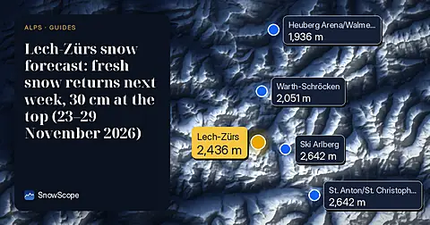

Where to find up to 17 cm of fresh snow in the next three days: Tyrol and Vorarlberg
11 of the 11 resorts we follow in Tyrol and Vorarlberg have snow on their upper slopes on Sunday 22 November; Pitztaler Gletscher leads with 58 cm.
See the live snow forecast for Silvretta Montafon in the SnowScope appSnow depth, powder alerts and the 3D map, free.
The next three days
By 25 November the forecast gives Silvretta Montafon 17 cm, Lech/Zürs 16 cm and Ischgl 16 cm.
| Resort | Snow depth | New snow, 72 h | Coming, next days | Top |
|---|---|---|---|---|
| Silvretta Montafon | 23 cm | 40 cm | 17 cm | 2,421 m |
| Lech/Zürs | 47 cm | 46 cm | 16 cm | 2,436 m |
| St. Anton/St. Christoph/Stuben | 41 cm | 42 cm | 16 cm | 2,642 m |
| Damüls-Mellau | 35 cm | 45 cm | 16 cm | 2,021 m |
| Ischgl | 33 cm | 36 cm | 16 cm | 2,868 m |
| Warth-Schröcken | 41 cm | 42 cm | 15 cm | 2,051 m |

Fresh snow, last 72 hours
Most new snow in 72 hours: Lech/Zürs 46 cm, Damüls-Mellau 45 cm and St. Anton/St. Christoph/Stuben 42 cm.
Resort by resort
Silvretta Montafon reports 23 cm up top; the lifts reach 2,421 m. Fresh snow: 40 cm in three days, forecast 17 cm by 25 November.
Damüls-Mellau: 35 cm on the upper slopes (top lift 2,021 m), 45 cm new in 72 hours, 16 cm more by 25 November.
Ischgl: 33 cm on the upper slopes (top lift 2,868 m), 36 cm new in 72 hours, 16 cm more by 25 November.
Lech/Zürs reports 47 cm up top; the lifts reach 2,436 m. Fresh snow: 46 cm in three days, forecast 16 cm by 25 November.
Snow depth, resort by resort
Across all 11 resorts on this list, the middle value is 41 cm on the upper slopes.
Behind the leader: Lech/Zürs (47 cm), St. Anton/St. Christoph/Stuben (41 cm), Warth-Schröcken (41 cm) and Damüls-Mellau (35 cm).
Pick for a short trip
For a short trip, Lech/Zürs is the pick: 47 cm on the upper slopes now and 16 cm more by 25 November.
Check the traffic at the border and the mountain roads on Saturday mornings: leaving an hour earlier often saves two.
Beyond the groomers
Powder is possible on the upper slopes after 46 cm of new snow. Tours and off-piste only with the avalanche bulletin read, a transceiver, shovel and probe.
New snow on a cold base means the best piste conditions of the week, and the steep runs ski well again.
Tips for skiers
- Off-piste only after reading the avalanche bulletin.
- Check which lifts are open before you drive.
About these numbers
Resort snow depths are the deepest snow on the resort's upper slopes on the date shown; they are estimates for an area, not a measurement at one point. Forecasts can change. Always read the official avalanche bulletin before going off-piste.
Cite this report
For research, teaching or the press: the numbers and charts are free to reuse under CC BY 4.0 with this citation.
SnowScope (2026), Where to find up to 17 cm of fresh snow in the next three days: Tyrol and Vorarlberg, https://snowscope.app/blog/en/2026/11/neuschnee-tirol-vorarlberg-22-november-2026.html, accessed 2026-11-22
SnowScope (Atlas Labs). (2026, November 22). Where to find up to 17 cm of fresh snow in the next three days: Tyrol and Vorarlberg. SnowScope snow reports. https://snowscope.app/blog/en/2026/11/neuschnee-tirol-vorarlberg-22-november-2026.html
BibTeX
@misc{snowscope2026neuschneetirolvorarlberg,
author = {{SnowScope (Atlas Labs)}},
title = {Where to find up to 17 cm of fresh snow in the next three days: Tyrol and Vorarlberg},
year = {2026},
month = nov,
howpublished = {\url{https://snowscope.app/blog/en/2026/11/neuschnee-tirol-vorarlberg-22-november-2026.html}},
note = {Published 2026-11-22 11:27 UTC; accessed 2026-11-22}
}· CC BY 4.0 · Methods, data and tools →
Silvretta Montafon: snow and temperature by height, this winter vs last (tools) →
Follow Silvretta Montafon
Free: a message when fresh snow is coming, and the forecast every morning.
More snow reports

Lech-Zürs faces a split forecast: modest snow this week, then 30 cm next week (7–53 cm range). Best day is Sunday 29 November.

Ischgl snow forecast for 23–29 November 2026: 18 cm at the top (3–34 cm), 14 cm at the base, snowiest day Thursday 26 November, with neighbours compared.

Pitztaler Gletscher holds December snow better than most Alps resorts: 87 cm at mid-mountain by mid-December, with every recent winter above 30 cm. Data 13 November 2026.